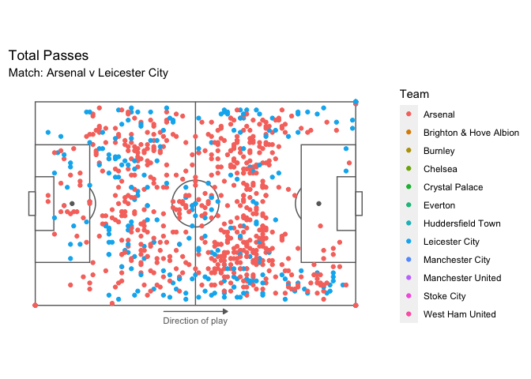
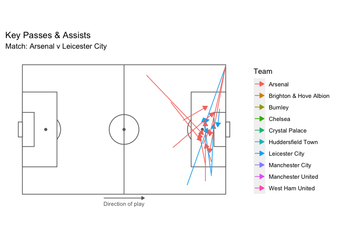
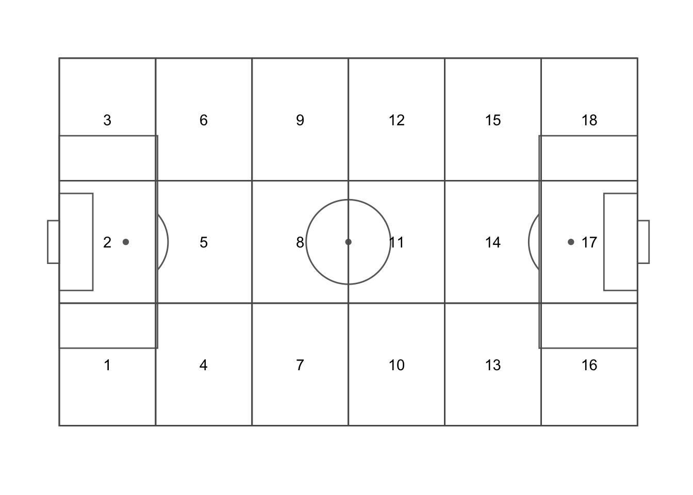
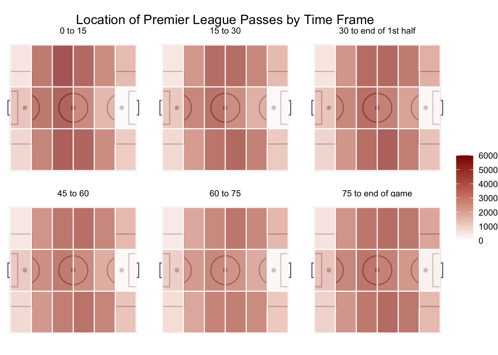
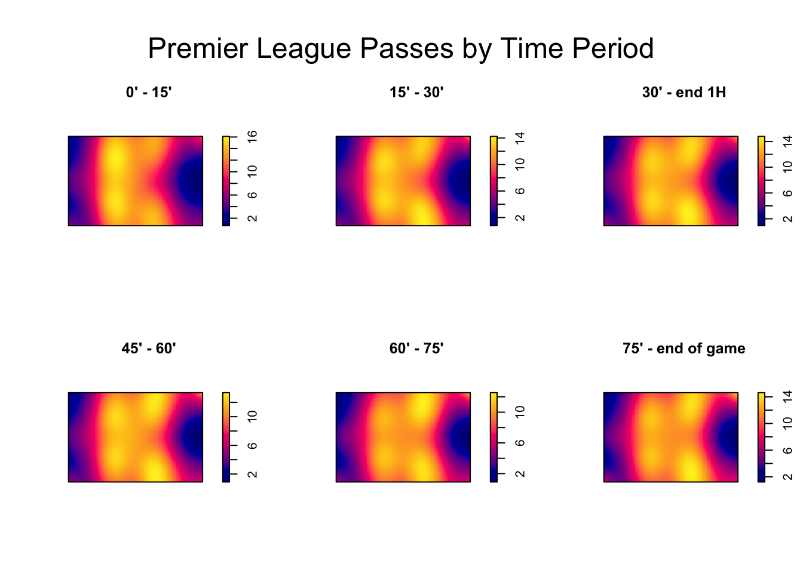
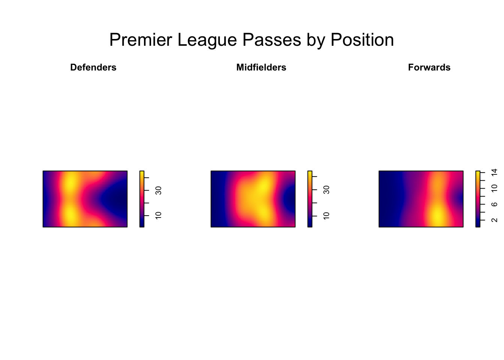

Chapter 3 Visualization and Analysis
Our first step was to understand and visualize the overall distribution of passes within individual matches by team. We decided to look at matches from the Premier League and created an animation to see what we could learn from a few different games.

Within the animation, we can clearly see differences between each match, and we also see where the passes generally occur within the field. Notably, strong teams such as Manchester City, Manchester United, Arsenal, Liverpool or Chelsea clearly dominate the opposition in terms of the number of passes and pass location within the matches. They had greater numbers of passes that typically occurred closer to the opposition goal.
The next step we wanted to explore was how these more dominant teams transformed these passes into goals to win the match. Where did they create more threats, dangerous chances, and goal scoring opportunities from passes to help win the game? The next animation plot provides some insight to this:

Assists are the final pass leading to the recipient who ends up scoring a goal, while a key pass is the final pass leading to the recipient who has a shot at goal without scoring. These are the types of passes that create goals and goal scoring opportunities, and again we see patterns in the locations, types of passes, and quantity based on the teams. Many of these passes are coming from and going to similar areas on the field, which we will explore further. Also, we see that the strong teams have more key passes and assist, which leads to more goals compared to the weaker teams.
Next, we wanted to explore how different variables affected pass locations and their distribution. To do this we used the point process data and created an areal data set so we could look at aggregate summaries over different field locations. This will make it a bit easier to compare the overall number of passes that occur in a given zone based on factors like the team and time of the game. We divided the field into the following 18 zone grid, as this is a common way of dividing up a soccer field into smaller sections.

Then, the first variable we looked at in relation to passes was the time period of the match. We hypothesized that depending on the time of the game, the distribution of passes would vary given that teams may become more defensive or attacking minded throughout the course of the game. The matches were divided into 6, 15 minute segments, and then we plotted the total number of passes by zone in the Premier League across the whole season.

We do notice time influencing the location of passes, with a higher number of passes occurring in the defensive third at the start of the game, presumably when teams are just starting to settle into the game. As time progresses, passes gravitate more toward the attacking end of the field and are generally occurring more in wider areas of the pitch. Another way to visualize this is show below through kernel density plots. These highlight the locations of passes a bit better than the plot above, but do note that the intensity scales differ so it is not as good for comparing the true counts of passes in those locations.

Another covariate we explored was the player’s assigned position, i.e. goalkeeper, defender, midfielder, or forward, with an added focus on the last three. Field players are arranged on the pitch according to these positions, and generally occupy the same sorts of spaces during the match. Defenders are usually the furthest back, midfielders in the middle, and forwards highest up the field. Because of this, we are curious to see how passes are distributed among these groups as we expect the locations to be somewhat correlated within positions and quite different between groups. A kernel density plot of Premier League passes by position in the 2017/18 season is shown below:

There is a clear difference in the distribution of pass locations and quantity based on player positions. It seems that more passes occur from defenders and midfielders as the relative intensities are about twice as large as forwards. The passes are also clustered within each group, aligning with common positions on the field. This shows that the locations of passes are correlated based on position, and this is something we should consider in our future models.
From these initial visualizations, we are able to get a better understanding of the ways passes are distributed spatially on the pitch, and the types of factors that influence them, namely information about team, time of the game, and player’s assigned position. From here, we can use these variables and spatial information to model the number of successful passes to see what separates the best teams from the rest in the Premier League, and also how this varies from league to league.